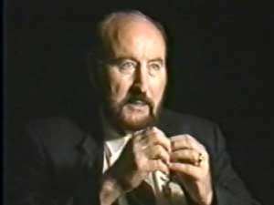
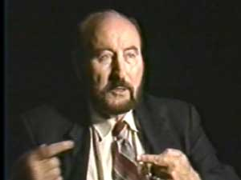
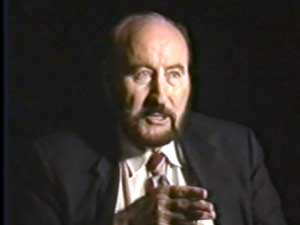
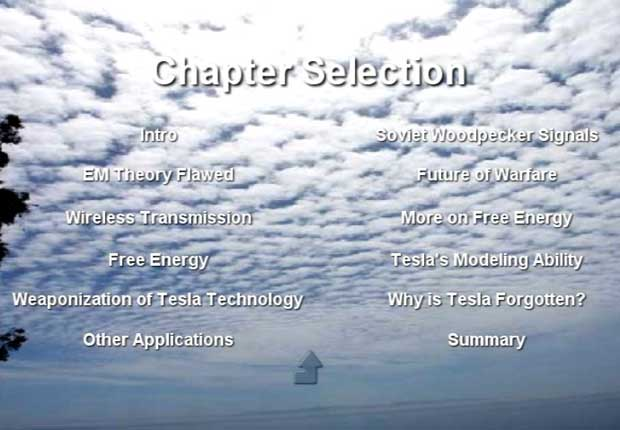

"Tom Talks Tesla"
|
|
"What I've done is taken him to heart, and
convinced myself -- with a lot of investigation and study --
that waves in the vacuum are longitudinal."
 "Every time a mathematician or a physicist
writes a wave equation, he is throwing away half the problem or of the
phenomenon... Newton's 3rd Law is not a law, it's a description; it's
not a mechanism for what causes something to happen. If you add
back in the wave that is missing, guess what you get? You get
equal and opposite waves in the vacuum... What came in from the vacuum
had both. There is a longitudinal wave in the vacuum, not
just a single transverse wave... A potential actually has a hidden
set, an incredible amount of waves, going in both directions. We
consider it a fixed value at a point in space, but as a matter of fact
it's a tremendous energy flow. If you make a beam of that, you
can indeed transmit energy in a completely hidden fashion; you can stick
a normal meter right in the beam and it won't see a thing, because
there is no force-field, and you can transmit it at a distance."
 "Tesla was talking about the transmission of
energy without loss. If that is true, then it
already exists in nature. Today in modern theory we know that the
energy in an electromagnetic wave, transmitted, is already
conserved. If you take a given wavelength from an omnidirectional
transmitter, and you take the hemispherical shell of that wavelength
times the entire surface area of that shell, the energy that's in that
shell is the same as the energy in any other shell of any radius.
The energy is totally conserved, and none of it is lost -- we already
know that. The energy density, of course, goes way down as the shell
expands. So that part is unquestionable. The question is,
can we direct that, can we control it? If we do a laser beam, then
in a sense we do it. But there's a better way..."
 "When you do these things with potentials, without involving force-fields, you actually involve the time dimension. When you do this, you can affect thought, you can affect human beings where they live, because thought occupies the time dimension; it's not just spatial."
—Tom
Bearden |
